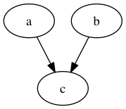

According to the Org mode docs, it is possible to customize whether the code block will be exported or not.
#+RESULTS: blockUsing Org Babel features, it is possible to set :results output
to a code block and render the results within a #+RESULTS: code block:
#+begin_src ruby :results output :exports both
puts "Hello world"
#+end_src
#+RESULTS:
: Hello world
One thing about the #+RESULTS: code blocks, is that they exist in several forms:
#+begin_src python :results output :exports both
print "like"
print "this"
print "etc..."
#+end_src
#+RESULTS:
: like
: this
: etc...
#+begin_src ruby :results output :exports both
10.times {|n| puts n }
#+end_src
#+RESULTS:
#+begin_example
0
1
2
3
4
5
6
7
8
9
#+end_example
:results output code is used, the results would
be a src block of the same language as the original one.
#+begin_src ruby :results output code
counter = 0
10.times { puts "puts '#{counter += 1}'" } # Displayed in first code block
puts counter # Displayed in second code block
#+end_src
#+RESULTS:
#+begin_src ruby
puts '1'
puts '2'
puts '3'
puts '4'
puts '5'
puts '6'
puts '7'
puts '8'
puts '9'
puts '10'
10
#+end_src
#+RESULTS:
: 10
The default is to export only the code blocks.
The following is an code block written in Emacs Lisp and its result should not be exported.
(message "hello world")
The following is a code block written in Python and its result should not be exported.
for i in range(0,12):
print "import this"
Only the code would be in the output, the same as when no option is set.
var message = "Hello world!";
console.log(message);
And as block example too:
var message = "Hello world!";
for (var i = 0; i< 10; i++) {
console.log(message);
}
This omits both the resulting block, and the code block itself.
This should work as well when using an example block.
Math::PI + 1
4.14159265358979
Should behave the same when within a block example.
hello = <<HELLO
The following is a text
that will contain at least 10 lines or more
so that when C-c C-c is pressed
and Emacs lisp
evals what is inside of the block,
enough lines would be created
such that an example block
would appear underneath the
block that was executed.
This happens after 10 lines by default.
HELLO
The following is a text that will contain at least 10 lines or more so that when C-c C-c is pressed and Emacs lisp evals what is inside of the block, enough lines would be created such that an example block would appear underneath the block that was executed. This happens after 10 lines by default.
This option can’t be completely supported by OrgRuby since we would have to eval the code block using :lang, so Org Babel features would have to be implemented as well.
But in case the resulting block is within the Org mode file, the code block will be omitted and only the results block would appear.
3.141592653589793
The same should happen when a block example is used instead:
any string any string any string any string any string any string any string any string any string any string
A code block which is evaled within a Org mode buffer
using Org babel features will have its results appear within
another code block prepended with a #+RESULTS directive.
A results block could also not be another example block, and just consist from a link to a file. This happens when the output is a graphic for example:
digraph workflow {
a -> c;
b -> c;
}
digraph workflow {
a -> c;
b -> c;
}

var message = "Hello world!";
console.log(message);
var message = "Hello world!";
for (var i = 0; i< 10; i++) {
console.log(message);
}
Math::PI + 1
4.141592653589793
hello = <<HELLO
The following is a text
that will contain at least 10 lines or more
so that when C-c C-c is pressed
and Emacs lisp
evals what is inside of the block,
enough lines would be created
such that an example block
would appear underneath the
block that was executed.
This happens after 10 lines by default.
HELLO
The following is a text that will contain at least 10 lines or more so that when C-c C-c is pressed and Emacs lisp evals what is inside of the block, enough lines would be created such that an example block would appear underneath the block that was executed. This happens after 10 lines by default.
3.141592653589793
any string any string any string any string any string any string any string any string any string any string